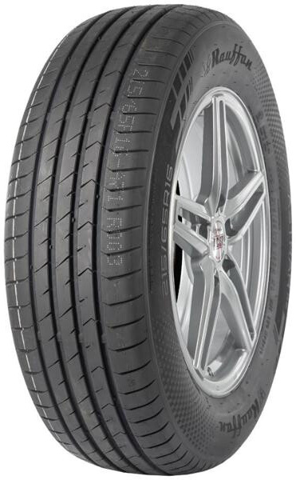

RAUFFAN ASTRAR R2 175/70R13

RM 88.00
The Rauffan Astrar R2 is a high-performance passenger car tyre suitable for daily commuting and highway driving. The 175/70R13 82T version features a B-rated wet grip, C-rated fuel efficiency and low external rolling noise of 69 dB, offering a balance of wet road performance, driving comfort and efficiency.
Klang Hock Li Tyre Services Sdn Bhd, Klang, Selangor, Malaysia.
View live product details and enquire